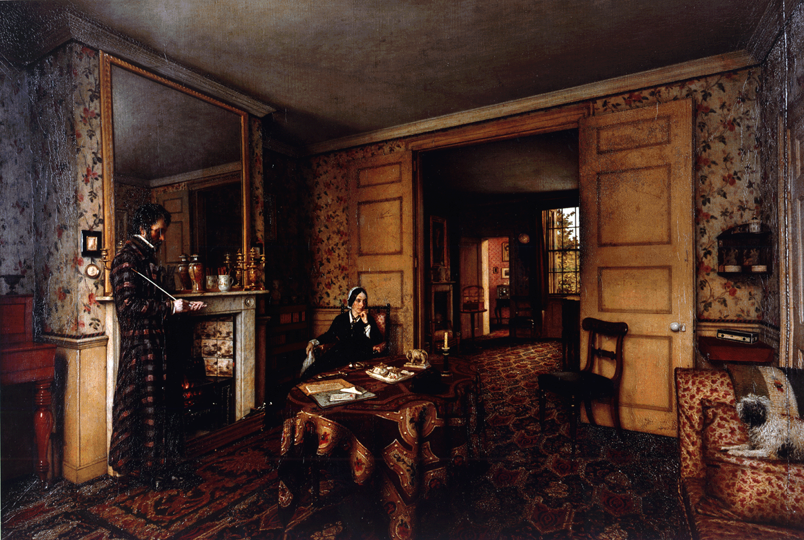

<div class="container" id="content">
  <div class="row justify-content-start">
    <div class="col-12">
      <!-- Header -->
      <div class="row justify-content-between align-items-end orange-border-bottom">
        <h4>The Carlyles and Their &#x201c;Victorian&#x201d; World in Letters</h4>
        <app-search></app-search>
      </div>

      <!-- Content -->
      <div class="d-flex flex-container justify-content-start pt-2">
        <div class="about-text d-flex flex-column justify-content-start align-items-start pt-2">
          <!-- Quote -->
          <p id="p1">
            <i>Consider, or try to consider, for a moment, the array of British
            thought, the resultant ensemble of the last fifty years, as
            existing today,</i> but with Carlyle left out. <i>It would be
            like an army with no artillery.</i><br />&#8212;Walt Whitman,
            <i>Specimen Days</i> (1881)
          </p>

          <!-- The Carlyles -->
          <a
            class="btn btn-link p-0 aboutButton"
            data-toggle="collapse"
            href="#theCarlyles"
            role="button"
            aria-expanded="false"
            aria-controls="theCarlyles"
          >The Carlyles</a>

          <div class="collapse"  id="theCarlyles">
            <p id="p2">
              As much as any other couple living in the nineteenth century, Thomas
              and Jane Welsh Carlyle defined what it was to be
              &#8220;Victorian.&#8221; He was the &#8220;Sage of Chelsea,&#8221;
              widely recognized as a voice crying out to an age of chaos. She was
              the vibrant, opinionated favorite of notables such as Alfred
              Tennyson, Charles Dickens, and Giuseppe Mazzini. Through the years,
              however, their reputations have suffered as much as the
              Anglo-centric term that still best describes them, if not their
              world.
            </p>

            <p id="p3">
              Samuel Butler&#8217;s rather Wildean dictum, that it was &#8220;very
              good of God to let Carlyle and Mrs. Carlyle marry one another, and
              so make only two people miserable instead of four,&#8221; has become
              a foundation of misperception, both for scholars forced to draw
              conclusions from the conventionally accepted snippets of an
              overwhelmingly immense body of literature, and for general readers,
              the vast majority of whom have no idea who the Carlyles were at all.
            </p>

            <p id="p4">
              But even as we admit to all of their faults and all of their
              conscious and unconscious participations in the cultural evils of
              nineteenth-century Britain, the Carlyles remain vitally important to
              any satisfactory understanding of the culture, the literature, and
              the history of their time. The legacy that Walt Whitman claimed for
              Carlyle in 1881 still rings true, and for both Carlyles.
            </p>
          </div>

          <!-- Coming of Age -->
          <a
            class="btn btn-link p-0 aboutButton"
            data-toggle="collapse"
            href="#comingOfAge"
            role="button"
            aria-expanded="false"
            aria-controls="comingOfAge"
          >Coming of Age</a>

          <div class="collapse" id="comingOfAge">
            <p id="p5">
              Thomas Carlyle was born in the small village of Ecclefechan,
              Scotland, in 1795 to strict yet loving Calvinist parents.
              Conversely, Jane Baillie Welsh was born to solidly middle class
              parents in the somewhat less provincial town of Haddington,
              Scotland, in 1801. Although their childhoods were marked by dramatic
              differences in class, there were also essential similarities. Both
              Thomas and Jane were intelligent, voracious readers who overcame
              great obstacles to be educated. It is not surprising that when Jane
              Baillie Welsh met the young scholar from Edinburgh and became his de
              facto pupil, they fell in love.
            </p>
  
            <p id="p6">
              As the Carlyles came of age in the 1820s, eventually marrying in
              1826, the imaginative revolution we recognize as the Romantic
              endeavor was being questioned and overlapped by the inexorable
              advent of a worldview dominated by industrialism (a word coined by
              Carlyle) and by a developing, earnestly &#8220;Victorian&#8221;
              sensibility.
            </p>
          </div>

          <!-- To London and Fame -->
          <a
            class="btn btn-link p-0 aboutButton"
            data-toggle="collapse"
            href="#londonAndFame"
            role="button"
            aria-expanded="false"
            aria-controls="londonAndFame"
          >To London and Fame</a>

          <div class="collapse" id="londonAndFame">
            <p id="p7">
              In 1834 the Carlyles moved from remote Craigenputtoch in rural
              Scotland (where Carlyle had penned <i>Sartor Resartus</i> and met
              Ralph Waldo Emerson) to modest quarters in &#8220;shabby&#8221;
              Chelsea, a block from the Thames in the western part of greater
              London. Once established at 5 Cheyne Row, they quickly established
              themselves at the center of a growing circle of influential artists,
              philosophers, writers, historians, politicians, and editors just as
              the British Empire was expanding toward the zenith of its world
              dominance.
            </p>
  
            <p id="p8">
              Merit and fortune, therefore, combined to place the Carlyles
              squarely at the geographical, political, and intellectual center of
              their century. Fortunately, readers who seek to view the age of
              Victoria from this central vantage point may do so in the remarkable
              account left to them in the Carlyles&#8217; letters.
            </p>
          </div>

          <!-- Lives in Letters -->
          <a
            class="btn btn-link p-0 aboutButton"
            data-toggle="collapse"
            href="#livesInLetters"
            role="button"
            aria-expanded="false"
            aria-controls="livesInLetters"
          >Lives in Letters</a>

          <div class="collapse" id="livesInLetters">
            <p id="p9">
              The Carlyles&#8217; fame, however, does not mean that they wrote
              exclusively to and of great people and events. Of the approximately
              seven thousand letters published so far in this ongoing edition, the
              majority are written to family members, with many more written to
              people who would otherwise not leave their literary mark in the
              annals of time. As it was for everyone writing in the nineteenth
              century, the letter was the main vehicle of communication over
              distance. And it is in the rather quotidian letters reporting news
              of family, weather, and dinner or travel plans that one detects the
              utterly human quality of the Carlyles&#8217; daily lives.
            </p>
            <p id="p10">
              Remarkably, the vibrancy that exudes from their everyday
              correspondence appears also in the letters to their more famous
              friends, an array of correspondents that includes all of the names
              one might expect to find in a list of important British, American,
              and European thinkers and writers of the 19th century:
            </p>
  
            <p id="p11">
              Louis Blanc, Elizabeth Barrett Browning, Robert Browning, Lydia
              Maria Child, Charlotte Cushman, Erasmus Darwin, Charles Dickens,
              Charles Gavan Duffy, George Eliot, Ralph Waldo Emerson, Edward
              FitzGerald, John Forster, James Anthony Froude, Margaret Fuller,
              Elizabeth Gaskell, Johann Wolfgang von Goethe, Alexander Herzen,
              Holman Hunt, Leigh Hunt, Geraldine Jewsbury, Charles Kingsley,
              Charles Macready, Harriet Martineau, Giuseppe Mazzini, John Stuart
              Mill, John Ruskin, Alfred Tennyson, William Makepeace Thackeray,
              Ivan Turgenev, and Thomas Woolner.
            </p>
  
            <p id="p12">
              As incredible as it may seem, this list contains only a fraction of
              the more than 600 correspondents whose letters from the Carlyles
              survive in libraries and private collections around the world, and
              scholars continue to discover previously unknown letters by both
              Carlyles.
            </p>
          </div>

          <!-- Collecting the Letters -->
          <a
            class="btn btn-link p-0 aboutButton"
            data-toggle="collapse"
            href="#collectingLetters"
            role="button"
            aria-expanded="false"
            aria-controls="collectingLetters"
          >Collecting the Letters</a>

          <div class="collapse" id="collectingLetters">
            <p id="p13">
              When Jane Welsh Carlyle died in April 1866, Carlyle was left a
              visible wreck, an old man searching through boxes in an effort to
              preserve his beloved &#8220;Goody&#8221; in letters. Regardless of
              how scholars wish to describe the motivation behind Carlyle&#8217;s
              collecting and organizing of his wife&#8217;s letters, he must be
              thanked for his fundamental role in saving a remarkable literary
              archive for future generations. When Carlyle himself died in 1881,
              having turned the clich&#233; &#8220;His life spanned the
              century&#8221; into reality, the collection of his own letters
              continued in earnest.
            </p>
  
            <p id="p14">
              More than 125 years later, the Carlyles&#8217; letters continue to
              be collected and published, and they continue to be relevant to
              understanding their time, as well as our own. Some scholars, perhaps
              forgetting Whitman&#8217;s admonition, wonder why. Assuredly,
              Carlyle&#8217;s voice sounds horrible to a twenty-first-century ear,
              especially one with no knowledge of the sarcastic, bombastic nature
              of the singer.
            </p>
  
            <p id="p15">
              Jane Welsh Carlyle&#8217;s life, similarly misunderstood, has been
              read as a maudlin tragedy of &#8220;Victorian&#8221; sexual
              politics, abused by an uncaring, narcissistic husband more
              interested in preserving his &#8220;Victorian&#8221; reputation than
              in exhibiting kindness to his &#8220;Victorian&#8221; wife.
            </p>
          </div>

          <!-- Envisioning a More Human Legacy -->
          <a
            class="btn btn-link p-0 aboutButton"
            data-toggle="collapse"
            href="#humanLegacy"
            role="button"
            aria-expanded="false"
            aria-controls="humanLegacy"
          >Envisioning a More Human Legacy</a>

          <div class="collapse" id="humanLegacy">
            <p id="p16">
              Armed with such damning &#8220;evidence,&#8221; post-millennial
              academe has confined the Carlyles to the role of participants in the
              broader hegemonic evils of a British conception of self and nation
              utterly comfortable with the idea of lending their queen&#8217;s
              name to an age. But if one is to understand the Carlyles in more
              human terms, beyond the accepted vision of a &#8220;Victorian&#8221;
              couple victimized by the &#8220;Victorian&#8221; age, if one is to
              see the Carlyles not reductively as paradigmatic loci for new
              historical finger-pointing, then one must turn to their letters.
            </p>
  
            <p id="p17">
              In his own long literary career, particularly through his historical
              works on the French Revolution, the era of Cromwell, and the life of
              Frederick the Great, Carlyle understood very well that letters are
              autobiography and that biography is history, that letters can and do
              possess an intrinsic honesty that opens windows, not just on the
              life of the letter-writer but, in a broader and more significant
              sense, on the letter-writer&#8217;s contemporary environment
              (another word coined by Carlyle). In his immortal
              <i>In Memoriam</i>, Tennyson makes physical and spiritual contact
              with his dead friend Hallam by reading his letters. Similarly, the
              Carlyles and their world live again in these letters. In reading
              them, you will find their lives to be decidedly more human than
              &#8220;Victorian.&#8221;
            </p>
  
            <p id="p18">B.E.K.</p>
            <br />
            <p id="p19">
              [For a more comprehensive introduction to the Carlyles, their
              letters, and their world, please see the introductions and
              chronologies of the print edition, all of which are readily
              available in the <i>CLO</i> on the table of contents page for each
              volume.]
            </p>
          </div>
        </div>
        <!-- Image -->
        <div class="about-image d-flex flex-column">
          
          <p><i>A Chelsea Interior,</i> by Robert Scott Tait, 1857, Courtesy of the National Trust</p>
        </div>
      </div>
    </div>
  </div>
</div>
